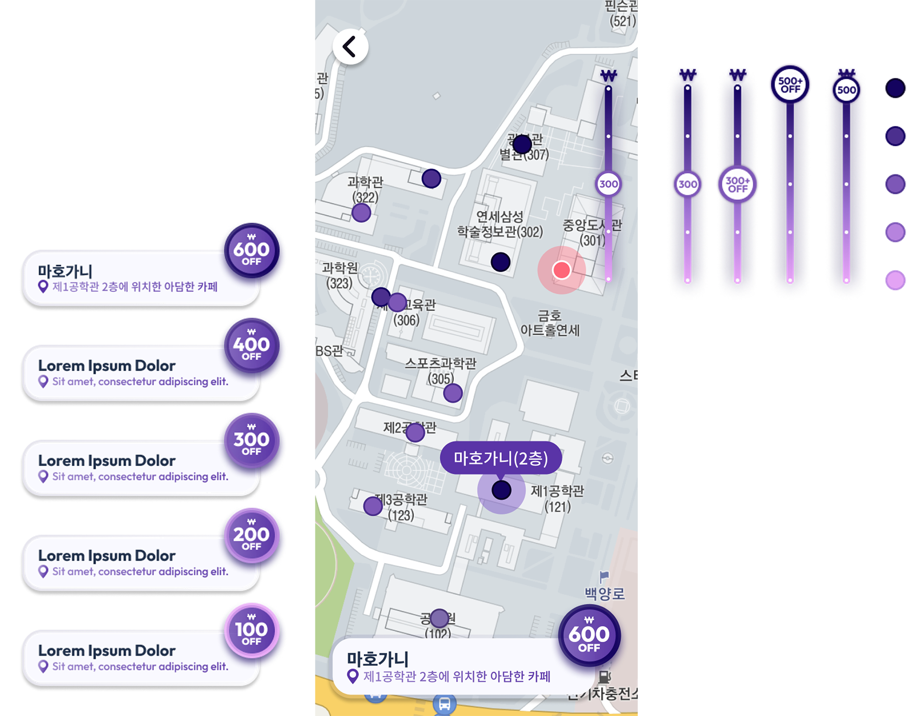

yourWellCup UI Upgrade
Short-Term UI Designer at yourWellCup | Aug 2022
Introduction
YourWellCup was a startup offering a reusable cup sharing service, aiming to expand its customer base within the college campus area. With promotion events scheduled for the upcoming semester, I was tasked with providing design recommendations and creating interfaces for the app update. This included designing the promotion event page, user guide pages, and a feature to filter available cafes based on the coffee discount offered when using YourWellCup.
Challenge
“How can we strengthen the brand identity while seamlessly integrating new features?”
UI Design with Brand Image in Mind
A new feature was introduced to clearly display the discount available at each cafe and enable users to easily filter cafes by discount amount using intuitive slider bars and a cohesive color scheme.
When redesigning the UI to incorporate these new elements, I added glass-like borders and gradients to reflect the brand’s emphasis on cleanliness and environmental friendliness. This design choice reinforced the brand’s image while enhancing the user experience.
Clarifying the Value of the Service
The startup aimed to promote the service by highlighting two key benefits: unlimited coffee discounts once users start using the service and its positive environmental impact. I focused on clearly communicating these benefits through straightforward messaging and impactful visual graphics to make the service’s values clear to users.